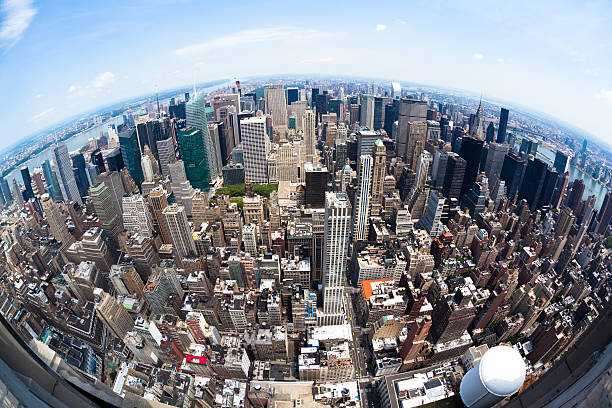
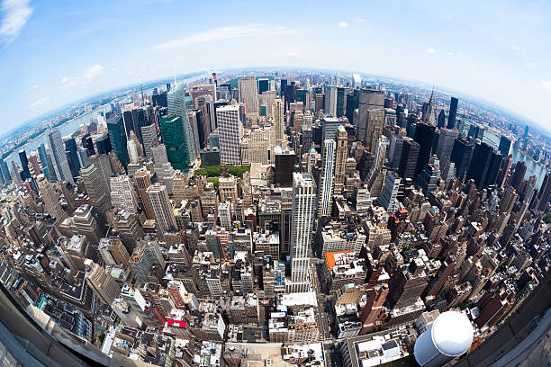

Camera lens
A camera lens (also known as photographic lens or photographic objective) is an optical lens or assembly of lenses used in conjunction with a camera body and mechanism to make images of objects either on photographic film or on other media capable of storing an image chemically or electronically. A camera lens consists of several lenses, which are called compound lens.
Classification of camera lenses
Camera lenses are mainly classified into two types.
• Angle of view
• Focal length
Angle of view
Describes how much of the scene in front of the camera will be captured by the camera's sensor. In slightly more technical terms, it is the angular extent of the scene captured on the sensor, measured diagonally.
Focal length
The focal length of a lens is determined when the lens is focused at infinity. Lens focal length tells us the angle of view. How much of the scene will be captured and the magnification. How large individual elements will be. The longer the focal length, the narrower the angle of view and the higher the magnification.
Also, Camera lenses can be categorized based on various criteria, including their focal length, aperture, design, and purpose.
Focal Length
.jpeg)
• Wide-angle lenses:
Typically, less than 35mm, offering a wide field of view, ideal for landscapes and architecture. The angle of view is more than 47`.
• Standard/Normal lenses:
Around 35mm to 85mm, providing a similar perspective to the human eye, versatile for various photography situations. The angle of view is 47°.
• Telephoto lenses:
Greater than 85mm, allowing for magnified shots of distant subjects, commonly used in sports, wildlife, and event photography. The angle of view is less than 47°.
• Super-telephoto lenses:
Extremely long focal lengths (e.g., 300mm and above), designed for capturing distant subjects in detail, often used in wildlife and sports photography.
Zoom Range
.jpeg)
• Standard zoom lenses:
Offer a range of focal lengths (e.g., 24-70mm) for versatile shooting, commonly used for everyday photography.
• Telephoto zoom lenses:
Provide a long zoom range (e.g., 70-200mm), ideal for capturing subjects at a distance.
• Wide-angle zoom lenses:
Cover a range of wider focal lengths (e.g., 10-24mm), suitable for landscapes and interior shots.
Aperture
.jpeg)
• Fast lenses:
Wide aperture (e.g., f/1.4 to f/2.8), allowing more light and enabling excellent performance in low-light conditions, often used for portraits and low-light photography.
• Standard aperture lenses:
Moderate aperture (e.g., f/3.5 to f/5.6), providing a balance between light gathering and depth of field, commonly used for general photography.
• Variable aperture lenses:
Aperture changes as you zoom, e.g., f/3.5-5.6, often found in zoom lenses.
Specialty Lenses
.jpeg) 
.jpeg)
• Macro lenses:
Designed for close-up photography, allowing for extreme magnification and detail of small subjects.
• Fisheye lenses:
Produce a wide-angle and highly distorted perspective, creating a circular or curved effect.
• Tilt-shift lenses:
Allow for selective focus and perspective control, commonly used in architectural and product photography.
Prime Lenses vs. Zoom Lenses
• Prime lenses:
Have a fixed focal length, offering excellent optical quality and often a wider aperture, making them ideal for specific purposes.
• Zoom lenses:
Offer a range of focal lengths, providing versatility and convenience for various photography situations.
Things related to camera lenses.
1. Anti-fogging treatment of optical surfaces:
Anti-fogging treatments are coatings or substances applied to optical
surfaces to prevent fog or condensation from forming on them, ensuring
clear visibility.
2. Large format lens:
Large format lenses are designed for use with large format cameras,
commonly used in photography where larger film or image sensors are used
for high resolution and detailed imagery.
3. Lens (optics):
A lens is a transparent optical device with curved surfaces that refract
light, converging or diverging it to create an image.
4. Lens hood:
A lens hood is an accessory attached to the front of a camera lens to
block unwanted light and reduce lens flare, improving image quality.
5. Lens cover:
A lens cover is a protective accessory used to shield a camera lens from
scratches, dust, and damage when not in use.
6. Lenses for SLR and DSLR cameras:
These are lenses specifically designed for Single-Lens Reflex (SLR) and
Digital Single-Lens Reflex (DSLR) cameras, offering various focal
lengths and apertures to suit different photography needs.
7. List of camera lens manufacturers:
This refers to a compilation of companies that manufacture camera
lenses, including well known names like Canon, Nikon, Sony, Sigma,
Tamron, Zeiss, and more.
8. Optical train:
The optical train refers to the path that light takes through various
optical components in an optical system, such as a camera lens and
viewfinder, to form an image.
9. Teleconverter:
A teleconverter is an optical accessory that increases the effective
focal length of a lens, providing greater magnification for telephoto
shots.
10. Tele side converter:
The term "tele side converter" doesn't have a widely recognized
definition in the context of optics or photography. It might be a
specific product or a lesser-known term.
Lens coating
.jpeg)
Coating is applied to both surfaces of the lens. There are two main types of coating: a single layer and multilayer (usually 3-5 layers). A multilayer coating effectively reduces reflected light that cannot be eliminated with a single layer coating and increases the transmittance of light.
Filters
.jpeg)
In photography and cinematography, a filter is a camera accessory consisting of an optical filter that can be inserted into the optical path. The filter can be of a square or oblong shape and mounted in a holder accessory, or, more commonly, a glass or plastic disk in a metal or plastic ring frame, which can be screwed into the front of or clipped onto the camera lens.
• UV and Skylight Filters
• Polarizing Filters
• Neutral Density Filters
• Graduated Neutral Density Filter
• Color Correcting Filters
• Close-Up Filters
• Special Effects Filters
Image Stabilization
Image stabilization (IS) is a family of techniques that reduce blurring associated with the motion of a camera or other imaging device during exposure. Comparison of simplified image stabilization systems: unsterilized. lens-based optical stabilization.
• Canon -(IS) Image Stabilization
• Nikkon- (VR) Vibration reduction
• Sigma -(OS) Optical Stability
• Tamron -(VC) Vibration Correction
• Fujifilm | Panasonic | Samsung- (OIS) Optical Image Stabilization